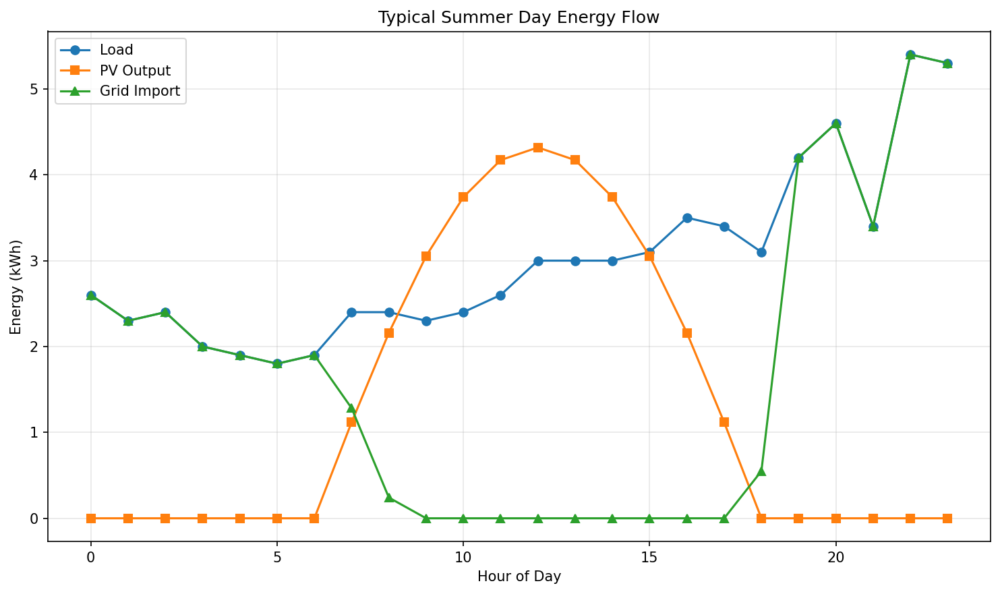

Python photovoltaic toolkit: silicon cell device physics plus PV-battery techno-economics.

A coursework project (ASU EEE 465/591, Photovoltaic Energy Conversion) bundling two Python photovoltaic studies. The first is a first-principles silicon solar-cell simulator that computes absorption, quantum efficiency, dark/light currents, series resistance, and the IV curve, then sweeps emitter design to maximize efficiency. The second is an 8,760-hour techno-economic simulation of a residential 5 kW PV plus 14 kWh battery system, comparing net metering against net billing under Salt River Project time-of-use rates.
Both simulators are written in Python using NumPy, pandas, and Matplotlib. The cell simulator implements solar-cell device equations (Auger lifetime model, diffusion lengths, IQE integration, busbar-limited series resistance, diode IV) and integrates measured AM1.5G/absorption tables on a 10-nm grid. The techno-economic model ingests hourly load and PV CSV profiles (8,760 rows), applies a three-season TOU rate structure and battery dispatch logic, and uses standard financial functions (NPV discounting, capital recovery, geometric-series O&M growth, scheduled battery replacements) over a 25-year, 3%-discount horizon.
The cell simulator reports Jsc 24.3 mA/cm2, Voc 0.668 V, FF 0.817, and ~13.28% efficiency, with figures-of-merit matched against Appendix A references. The techno-economic study finds both billing policies cut the $1,832.55 baseline bill by roughly 50% yet yield negative 25-year NPVs (-$7,572 net metering, -$8,059 net billing) and 15+ year paybacks under current Arizona rates. Full details are in docs/EEE591_Project_Paper.docx and docs/EEE 465_591 - Solar Cell Mini Project #2 (Saif Elsaady).pdf.